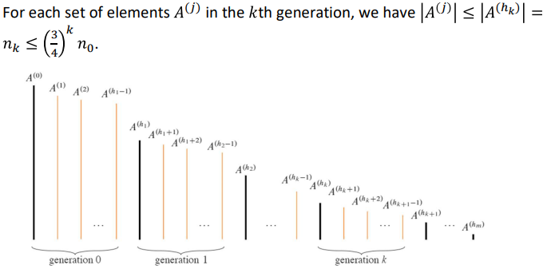

Selection Problem
i번째 순서의 값 찾기 / T(n) = Θ(n) 가능
먼저 RANDOMIZED-SELECT을 사용, 두 부분중 한쪽에만 재귀호출
worst-case : T(n) = T(n - 1) + Θ(n) = Θ(n^2)
RANDOMIZED-SELECT: Expected Running Time
알고리즘이 각각의 피벗 요소를 무작위로 선택할 때, 그 피벗은 데이터의 두 번째와 세 번째 사분위("가운데 반") 사이에 항상 위치한다고 가정
ith element < pivot, 피봇보다 큰 값을 무시 / ith element > pivot, 피봇보다 작은 값을 무시 (3/4 의 요소들이 "in play")
T(n) = T(3n/4) + Θ(n) = Θ(n)
피봇은 1/2의 확률로 중간 반에 떨어짐 / 피벗이 중간 반에 있을 때 partitioning is helpful
- helpful partitionings : (h0, h1, ... , hm)
- 적어도 log4/3 n 회의 helpful paririonings후에는 한 요소만 남게 되므로 이를 제한할 수 있다.
- 
- random variable Xk = hk+1 - hk for k = 0, 1, 2, ... , m - 1 (Xk = k번째의 숫자 sets 개수)
- partitioning 이 helpful할 확률은 적어도 1/2
- E[Xk] <= 2 for k = 0, 1, ..., m-1
- jth partitioning makes fewer than |A(j-1)| comparisons
Selection in Linear Time in the Worst Case
worst case에서 SELECT알고리즘을 통해 좋은 피봇(guarantees a good split)을 선택 -> Θ(n)
PARTITION-AROUND : SELECT
PARTITION과 유사하지만, 요소를 추가 입력 매개변수로 받아서 수행, 피봇의 인덱스를 반환
- g = (r - p + 1)/5개의 그룹으로 나눔 (5개씩 묶음)
- first group: (A[p], A[p + g], A[p + 2g], A[p + 3g], A[p + 4g])
- 피봇을 정하기 위해서 중앙값을 찾기 위한 SELECT를 재귀적으로 호출
- median of medians을 찾기 위해 PARTITION-AROUND함수 호출
SELECT: running time analysis
running time of SELECT = Θ(n)
- Total time spent outside of the recursive calls: O(n) + Θ(n) + Θ(1) = Θ(n)
- The recursive call in line 16: T(g) <= T(n/5)
- The recursive call in line 23, 24: T(7n/10) [why? : 5g - (3g/2) = 7g/2 <= 7n/10]
T(n) <= T(n/5) + T(7n/10) + Θ(n) / By substitution method